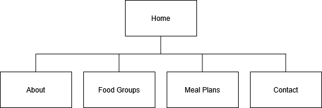

Balanced Bites Project Overview
Website Plan
- This website is being developed to promote Balanced Bites, a nutrition-focused platform created by registered nutritionist Roudayna Bajjani. The website will serve as a resource to educate users about the different food groups, healthy eating habits, and the benefits of balanced nutrition.
- The inteded users are individuals who are seeking nutrition help or guidance.
- The website will have a home page, about page, food groups page, meal plans and tips page, and a contact page.
Client Information
- Name: Roudayna Bajjani
- Organization: Balanced Bites
- Email: Roudayna@beitay.com
- Phone: [private]
Wireframe
Site Map

Page Design
Home Page
- Purpose: Welcome users and give a quick overview of nutrition resources
- Audience: All visitors
- Content: Welcome message and slideshow of images
- Interactivity: Image slideshow
About Page
- Purpose: Provide background information about Lisa and PerpetualSol
- Audience: Share info about the nutritionist Roudayna, her credentials, and mission statement.
- Content: Background, approach, and mission statement.
Food Groups Page
- Purpose: Educate users about the 5 major food groups and recommended servings.
- Audience: Visitors seeking nutritional help.
- Content: Info panels for: Fruits, Vegetables, Grains, Protein, Dairy.
- Interactivity: Expand/collapse sections or a hover-to-learn feature.
Meal Plans Page
- Purpose: Provide interactive meal plans
- Audience: Those looking for structured dietary planning.
- Content: Daily/weekly sample meal plans and meal prep tips
- Interactivity: Dynamic meal plan builder.
Contact Page
- Purpose: Provide contact information
- Audience: General questions from visitors.
- Content: Get in touch form
- Interactivity: AJAX form submission